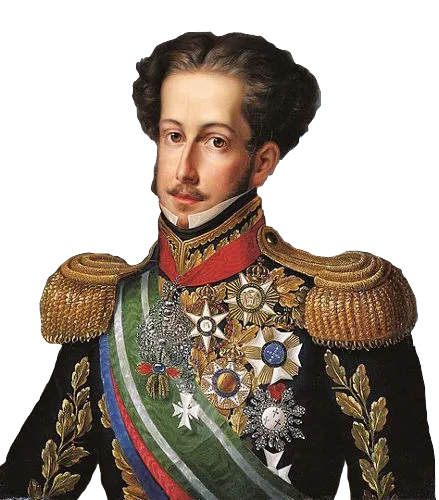

Guerras Brasileiras

|

|
 |
 |
 |
 |
| Revoltas Coloniais | Guerra de Independência | Guerra da Cisplatina | Guerra do Paraguai | Guerra de Canudos | Batalhas da FEB |
| (XVII - XVIII) | (1822 - 1824) | (1825 - 1828) | (1865 - 1870) | (1896 - 1897) | (1942 - 1945) |
| ● | ● | ● | ● | ● | ● |
Guerra da Independência
Sobre o conflito
Se tratando da guerra propriamente dita, desde o final de agosto de 1822, antes da proclamação da independência do Brasil, tropas brasileiras já enfrentavam militares em Salvador. E antes disso, muitas coisas acarretaram o desenvolvimento dessas batalhas tão sangrentas da independência do nosso Brasil. Diferente do que poderíamos assumir, as revoltas coloniais não necessariamente estão envolvidas com a independência, na verdade, um dos movimentos que influenciou a população brasileira a se tornar independente foi justamente a Revolução Americana de 1776. Que serviu como exemplo na época, inclusive para o próprio Tiradentes. Além da Revolução Francesa que ocorreu em 1789.
Onde ocorreu?
A Guerra da Independência ocorreu em ao menos cinco pontos no território brasileiro da época contra movimentos de resistência à libertação do Brasil: Bahia, Maranhão, Pará, Piauí, Cisplatina; nos pontos que eram de mais relevância em questões econômicas, sociais.
As tropas portuguesas demoraram bastante para ser completamente extintas. Sendo que a última província a aderir a independência foi a província Cisplatina (que é o atual Uruguai, que fazia parte do Brasil até 1828), depois de mais de 3 mil mortos por causa da guerra. Para garantir a vitória, D. Pedro precisou contratar mercenários europeus, que lutaram nas guerras contra Napoleão, para somar aos contingentes brasileiros. Podemos citar Pierre Labatut, um mercenário francês; Lord Cochrane, um dos maiores estrategistas durante a guerra, e assim por diante.